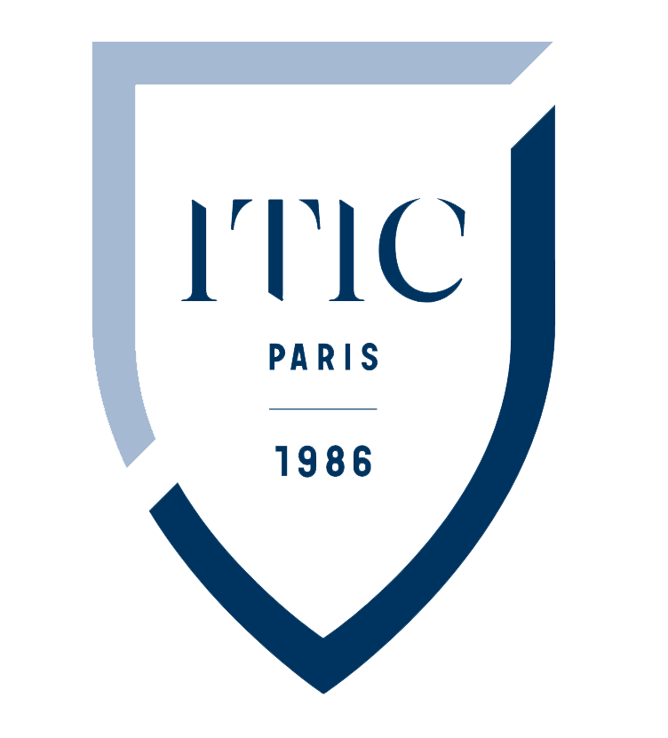

2020-2022
BTS Service Informatique aux Organisations (SIO)
ITIC Paris
- -Maîtriser les langages de programmation.
- -Développer des solutions techniques d’infrastructure.
- -Développer des applications logicielles.
- -Assurer la maintenance et l’évolution de ces solutions suivant les normes de sécurité informatique actuelles.
- -Etudier et développer des systèmes et des applications informatiques, notamment la programmation et/ou le paramétrage, la mise au point et la documentation de programmes réalisés selon les normes en vigueur dans le monde du travail.
- -Evaluer les besoins informatiques et techniques des utilisateurs d’un système, pour ensuite les implanter.

2020
Baccalauréat Belge comptabilité
Athénée Royal d’Ixelles
- -Études de matieres générales tel que Français,Mathématique,Histoire,Géographie...
- -Éducation économiques et sociales afin de mieux s’approprier les problématiques liées aux sciences humaines
- -Informatique de gestion utilisation d'excel pour cree des bilans et d'un logiciel comptable affin d'encoder des valeures
- -Organisation de l’entreprise etude de loi et articles
- -Secrétariat - bureautique redactions de lettres et de mailes sur Word
- -Comptabilité Utilisation de compte en T et de TVA
2010-2016
Diplôme national du brevet
Descartes
- Études de matieres généales :
- -Français
- -Mathématique
- -Histoire,Géographie
- -Anglais
- -Science